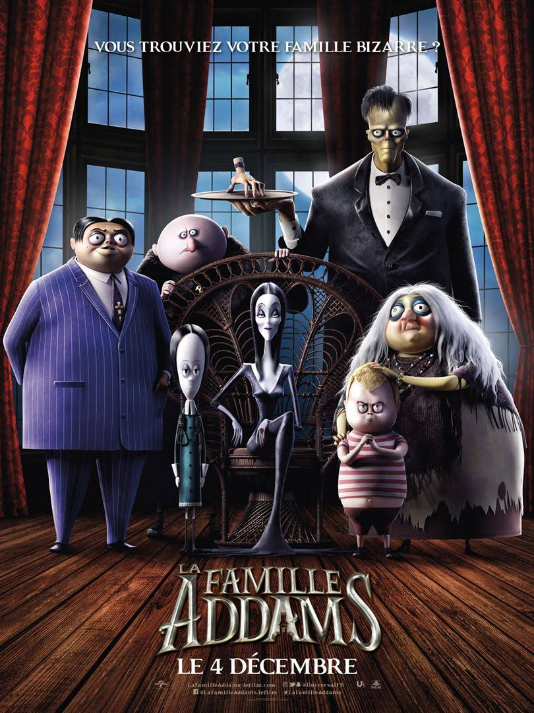

La Famille Addams
La famille Addams, qui vivait jusque-là retranchée dans leur demeure, juchée en haut d’une colline brumeuse du New Jersey, se prépare à recevoir des membres éloignés encore plus étranges qu’eux à l’occasion de la Mazurka de Pugsley. Une cérémonie aux allures de rite de passage qui doit se dérouler devant la famille au complet et où le jeune garçon doit prouver qu’il est prêt à devenir un véritable mâle Addams. Mais ils ne savent pas que leur voisine du bas de la colline — la décoratrice d’intérieur et animatrice de télévision aux dents longues Margaux Needler — est en train de mettre sur pied un quartier préfabriqué, tout en couleurs pop et en perfection. Quand le brouillard se lève, révélant la demeure des Addams, la sombre bâtisse semble se dresser entre la jeune ambitieuse et son rêve de vendre toutes les maisons du quartier pour devenir la personnalité la plus plébiscitée que la télévision ait jamais créée.
La famille Addams, qui vivait jusque-là retranchée dans leur demeure, juchée en haut d’une colline brumeuse du New Jersey, se prépare à recevoir des membres éloignés encore plus étranges qu’eux à l’occasion de la Mazurka de Pugsley. Une cérémonie aux allures de rite de passage qui doit se dérouler devant la famille au complet et où le jeune garçon doit prouver qu’il est prêt à devenir un véritable mâle Addams. Mais ils ne savent pas que leur voisine du bas de la colline — la décoratrice d’intérieur et animatrice de télévision aux dents longues Margaux Needler — est en train de mettre sur pied un quartier préfabriqué, tout en couleurs pop et en perfection. Quand le brouillard se lève, révélant la demeure des Addams, la sombre bâtisse semble se dresser entre la jeune ambitieuse et son rêve de vendre toutes les maisons du quartier pour devenir la personnalité la plus plébiscitée que la télévision ait jamais créée.